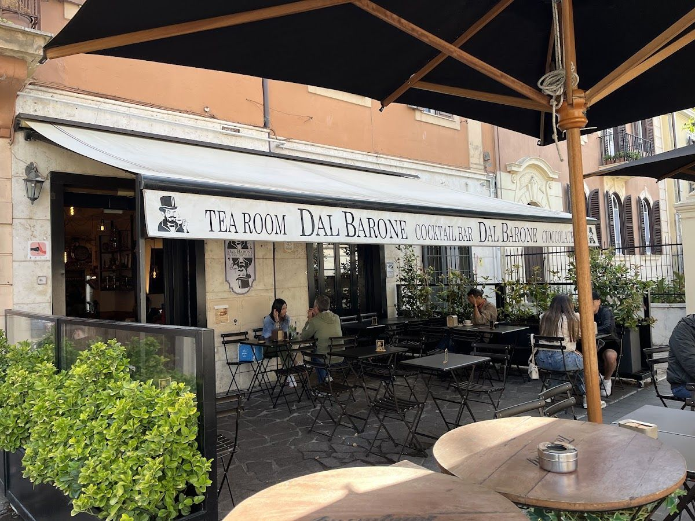

Prima pagina · Lido di Ostia
Il salotto di Ostia dove il tè incontra il cocktail
Cioccolate dense servite con biscotti al burro, tè e infusi da tutto il mondo, cocktail con sciroppi fatti in casa. In Piazza Anco Marzio, dalle 8 del mattino alle 2 di notte.

Dal Barone, nel cuore di Lido di Ostia, è un rifugio accogliente per chi ama le bevande ricercate e i piccoli piaceri. Il menu è ampio: cocktail raffinati, tè di qualità e cioccolate calde dense e vellutate, accompagnate da biscotti al burro.
Lo staff, attento e cordiale, rende speciale ogni visita. Chi ci viene loda soprattutto le bevande della casa e i dolci, che uniscono il calore della tradizione a un tocco creativo.
Che tu cerchi una cioccolata che scaldi un pomeriggio d'inverno o un aperitivo sofisticato, qui trovi ospitalità sincera e buon gusto. Perfetto per i pomeriggi e per le serate di festa.